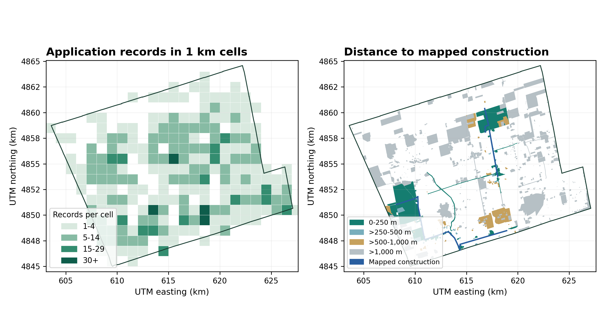

Data integration & management
Authoritative REST-service acquisition, stable source IDs, source/licence register, hashes, audit trails and safe CSV exports.
A York Region pilot that connects development application activity with documented water and wastewater construction—and makes the limits of that evidence visible.
Development application records and published infrastructure information answer different questions. Viewing them together can help planners identify places for closer review, but a nearby construction project does not establish a servicing allocation. This project provides a transparent starting point for those discussions.
The regional dashboard contains 5,482 application records: 5,477 labelled with one of nine York municipalities and five labelled Other/Outside York Region. It retains conflicting source statuses, named servicing references and selected official project timelines. Records are not unique developments or dwelling counts.
The study measures minimum full-polygon distances to five published construction line features carrying four distinct source names. There are 191 records within 250 m, 230 within 500 m (16.6%) and 323 within 1,000 m (23.4%). These thresholds are screening choices, not utility standards.

The highest-count cell, 618:4849, contains 43 records. Source addresses in this cell include Interchange Way, Doughton Road and Maplecrete Road. Multiple applications concern overlapping locations, so 43 does not mean 43 separate developments.
No cell is ranked as ready, constrained or delayed. The project does not model hydraulic connectivity, electricity capacity or utility eligibility.
Authoritative REST-service acquisition, stable source IDs, source/licence register, hashes, audit trails and safe CSV exports.
Original polygon inspection; EPSG:26917 transformation; full-geometry minimum distances; threshold comparison; representative-point assignment to a fixed 1 km grid.
Geometry and count checks; visible source-status discrepancies; automated regressions; an independent QGIS recalculation of every Vaughan record.
Linked interactive maps and charts, keyboard-accessible record alternatives, mobile layouts, downloadable GIS data and a mapped technical brief.
QGIS 3.40.6 independently re-read the hash-matched original inputs and recalculated all 1,382 records. Nearest lines, distance bands and grid assignments agreed. Maximum difference from stored rounded distances was approximately 0.000500 m. QGIS and Shapely both use GEOS; this is a computational cross-check, not a field survey or positional-accuracy certification.
Source data was retrieved on 25 November 2026 UTC. Retrieval is not the publisher's update date. Construction lines are a partial inventory; application records may overlap or describe the same site. A passed completion date does not verify commissioning. Administrative boundaries are not service-area polygons.
Version 1.0 completes the York Region pilot and Vaughan case study. Province-wide coverage, verified utility service areas, hydraulic capacity and formal application-to-project dependencies are future extensions requiring additional authoritative evidence.
For current planning and connection decisions, consult York Region and the relevant utility. Independent portfolio project by Jacob Analem; no government or utility endorsement is implied.